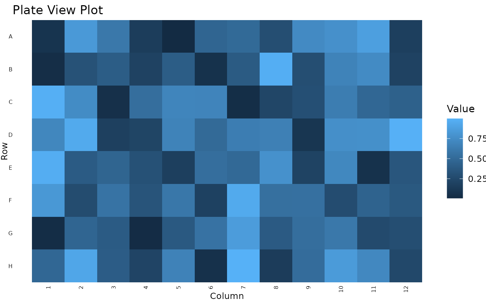

Plate View Theme for ggplot2
theme_plateview.RdThis function provides a consistent theme for plate view plots in ggplot2. It sets the scales, labels, and theme elements for a plate view visualization.
Usage
theme_plateview(
col_var,
row_var,
col_lab = "Column",
row_lab = "Row",
fill_lab = NULL,
title = NULL,
subtitle = NULL,
base_size = 12,
base_family = ""
)Arguments
- col_var
The variable representing the plate columns.
- row_var
The variable representing the plate rows.
- col_lab
The label for the x-axis (plate columns). Default is "Column".
- row_lab
The label for the y-axis (plate rows). Default is "Row".
- fill_lab
The label for the fill aesthetic. Default is NULL.
- title
The title of the plot. Default is NULL.
- subtitle
The subtitle of the plot. Default is NULL.
Examples
library(ggplot2)
# Create dummy data
data <- data.frame(
row = rep(LETTERS[1:8], each = 12),
col = rep(1:12, 8),
value = runif(96)
)
ggplot(data, aes(x = col, y = row, fill = value)) +
geom_tile() +
theme_plateview(col_var = data$col, row_var = data$row,
fill_lab = "Value", title = "Plate View Plot")
